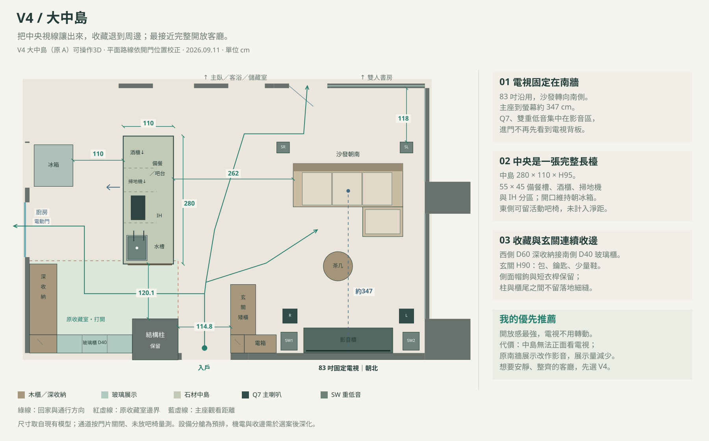
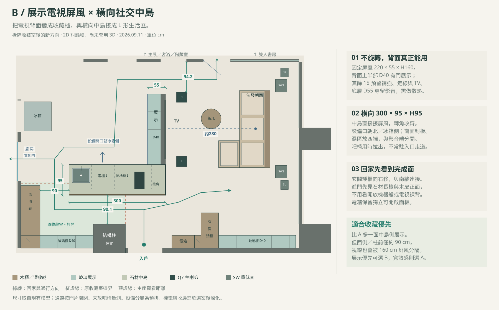

拆掉收藏室之後的兩種生活格局
同樣打開收藏室，V4 把電視放回南牆，讓中央完全開放；B 把電視固定在展示屏風上，背面留給收藏，再接上一座橫向中島。V4 已完成可操作 3D；B 保留為 2D 討論方案，既有 V1、V2、V3 仍保留。
V4大中島
把 83 吋電視移回南側固定牆，沙發轉向電視；中間的旋轉架與影音底櫃移除，讓中島到沙發之間約有 262 cm。收藏沿廚房外側與原收藏室南牆配置，中島東側可以用餐、聊天，也比較容易走向書房與臥室。

{kind=link}
{kind=link}
{kind=link}
{kind=link}
取捨：客廳中央更乾淨，影音方向固定；在中島用餐時，不能像 V3 把電視轉過來正面看。V3 原南牆客廳展示改作影音，因此展示量會減少，深公仔優先分配西側 60 cm 深櫃。
B展示電視屏風 × 橫向社交中島
保留客廳朝西的觀看方向，改用固定的 220 × 55 × H160 cm 影音展示屏風。朝中島的上半部做 40 cm 外深、有門的展示櫃；底層留給影音器材。300 × 95 cm 中島轉成橫向，端部直接接齊屏風，形成 L 形的備餐與收藏區。

{kind=link}
{kind=link}
{kind=link}
{kind=link}
取捨：多一面可觀看收藏的立面，也不用處理旋轉電視的裸背；但屏風仍會分隔視線，西側與柱前只剩約 90 cm。這兩段不安排固定吧椅。中島設備開口隨格局轉向北／冰箱側，水槽放西端，與東側影音端分開。
和目前 V3 有什麼不同
| 比較項目 | 目前 V3 | V4｜大中島 | B｜展示優先 |
|---|---|---|---|
| 電視與中央空間 | 中央 180° 旋轉電視 | 南牆固定；中央完整打開 | 固定展示屏風；與中島相接 |
| 中島尺寸 / 高度 | 300 × 95 / H95 | 280 × 110 / H95 | 300 × 95 / H95；轉橫向 |
| 中島南端至柱前 | 100.1 cm | 120.1 cm | 90.1 cm |
| 設備開口 | 西／冰箱側 | 西／冰箱側 | 北／冰箱側；濕區在西端 |
| 收藏展示 | 原收藏室南牆165 × 40；客廳南牆315 × 40 | 原收藏室南牆165 × 40；客廳南牆改影音 | 南牆165 × 40、240 × 40；屏風上半部220 × 40 |
| 較深收藏與行李 | 西側155 × 60深收納 | 沿用155 × 60深收納 | 沿用155 × 60深收納 |
| 進門視線 | 長中島短端、電視側面 | 開放通道、完整中島端面 | 橫向長檯與完成面；電視背面為展示 |
| 在中島正面看TV | 可轉向中島 | 無法正面看 | 無法正面看 |
| 目前進度 | 可操作3D | 可操作3D | 2D討論稿 |
展示尺寸為各段外寬 × 外深；不同高度與影音分層不能直接加總成收納容量。40 cm 外深不是 40 cm 層板淨深，大型公仔仍需按底座、姿勢與開門空間核對。
兩案共同保留的內容
- 保留廚房牆、入口約100 × 90結構柱、外牆及私領域格局；收藏室的展示隔間、門片與短牆取消。
- 家具規格沿用83吋電視、Q7兩支、Q6中置、雙重低音、擴大機、PS5 Pro與Switch 2。中島仍有酒櫃、掃地機、IH、飲水與備餐槽，按新版格局重排分艙。
- 玄關以H90矮櫃放包與鑰匙、少量鞋；短衣桿與側面帽鉤保留。櫃尾與轉角做完整收邊，電箱保留獨立開啟面。
- 採用深色直紋木皮、灰石材、玄關六角磚。圖面色彩用於分辨家具類型，並非要把全屋改成淺木色。
- V4 已延續 RGB、6組窗簾、廚房電動玻璃門、開門互動、室內步行和家具清單；B 的功能仍待3D建置。
圖面按現有模型座標繪製，已核對固定家具平面不互相重疊，並以36 cm身體寬檢查所畫路線。這只能確認封閉門片狀態的平面路線；V4 另以實際3D核對門片與步行路線，往書房會繞過打開的玻璃門；118cm為門關閉時牆至後環繞的距離，不代表開門後全程淨寬。設備安裝、支撐與機電仍待深化。雙重低音位置為避開走道的預排，聲學仍需量測；環繞與四顆天花聲道按新主座重新定位，不固定在玻璃上。